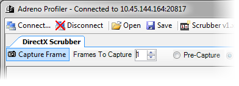
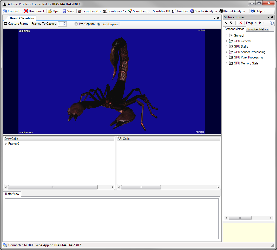

This tutorial explains the basics of using Adreno Profiler to capture and analyze DirectX frames from a mobile application.
After connecting to a device, create a new Scrubber DX from the main toolbar.
Once the Scrubber appears, click the "Capture Frame" button on the scrubber's toolbar.

A progress bar will be visible at the bottom-right corner of the window while the capture is in progress.
After the frame's data has finished downloading, the frame is recreated in a DirectX emulator window.

There are several panes below the emulator window that are used to explore the captured frame(s) in more detail.
 The DrawCalls pane shows a tree of captured frames
and the corresponding draw calls for each frame.
The DrawCalls pane shows a tree of captured frames
and the corresponding draw calls for each frame.
 The API Calls pane shows the API calls preceding the
selected draw call.
The API Calls pane shows the API calls preceding the
selected draw call.
 The Buffer View pane shows details about a resource
that was clicked in the API Calls pane.
The Buffer View pane shows details about a resource
that was clicked in the API Calls pane.
 The Shader View pane shows details about a shader resource
that was clicked in the Buffer View pane.
The Shader View pane shows details about a shader resource
that was clicked in the Buffer View pane.